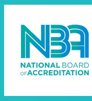

NSS
Sports
Lead
CSE Forum
Project Achivements
Gallery
Contact us
WELCOME !

"Congratulations to Only NBA Accredited Department Computer Science and Engineering (CSE) in Gulbarga region".
About
An independent department for Computer Science & Engineering was established in the year 1987. The department offers Undergraduate (BE), Post graduate (M.Tech) and Research Program.
The Department aims at imparting spirit of integrity, innovation, good etiquette and technical competency in the students through regular guidance and counselling. The graduates of CSE Department are Leaders in academia, industry and government
Department infrastructure supports focused and blended learning, new paradigm to unravel uncertain problems and research in machine intelligence. Department offers novel book bank scheme for students to have virtual ownership of compendium
VISION
To produce Professionally Excellent, Knowledgeable, Globally Competitive and Socially Responsible Computer Engineers and Entrepreneurs
MISSION
- MD1 To provide quality education in computer science and engineering
- MD2 To establish a continuous industry institute interaction, participation, Collaboration to contribute skilled IT Engineers
- MD3 To build human values, social values, entrepreneurship skills and professional ethics among the IT technocrats
- MD4 To focus on innovation and development of technologies by engaging in machine intelligence research areas
Program Educational Objectives
PEO1 Graduates of computer science & engineering course will have successful Professional career
PEO2 Graduates of computer science & engineering course will pursue higher Education
PEO3 Graduates of computer science & engineering course will have ability for Lifelong learning
Program Specific Outcomes
PSO1 Ability to model, design and implement computer network systems to meet specified requirements
PSO2 Ability to build software engineering system of varying complexity
Program Outcomes
Engineering Graduates will be able to
- Engineering Knowledge : Apply the knowledge of mathematics, science, engineering fundamentals, and an engineering specialization to the solution of complex engineering problems.
- Problem Analysis : Identify, formulate, review research literature, and analyze complex engineering problems reaching substantiated conclusions using first principles of mathematics, natural sciences, and engineering sciences.
- Design/development of solutions : Design solutions for complex engineering problems and design system components or processes that meet the specified needs with appropriate consideration for the public health and safety, and the cultural, societal, and environmental considerations.
- Conduct investigations of complex problems : Use research-based knowledge and research methods including design of experiments, analysis and interpretation of data, and synthesis of the information to provide valid conclusions.
- Modern tool usage : Create, select, and apply appropriate techniques, resources, and modern engineering and IT tools including prediction and modeling to complex engineering activities with an understanding of the limitations.
- The engineer and society : Apply reasoning informed by the contextual knowledge to assess societal, health, safety, legal and cultural issues and the consequent responsibilities relevant to the professional engineering practice.
- Environment and sustainability : Understand the impact of the professional engineering solutions in societal and environmental contexts, and demonstrate the knowledge of, and need for sustainable development.
- Ethics : Apply ethical principles and commit to professional ethics and responsibilities and norms of the engineering practice.
- Individual and team work : Function effectively as an individual, and as a member or leader in diverse teams, and in multidisciplinary settings.
- Communication :Communicate effectively on complex engineering activities with the engineering community and with society at large, such as, being able to comprehend and write effective reports and design documentation, make effective presentations, and give and receive clear instructions.
- Project management and finance : Demonstrate knowledge and understanding of the engineering and management principles and apply these to one's own work, as a member and leader in a team, to manage projects and in multidisciplinary environments.
- Life-long learning : Recognize the need for, and have the preparation and ability to engage in independent and life-long learning in the broadest context of technological change.